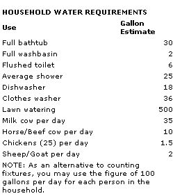
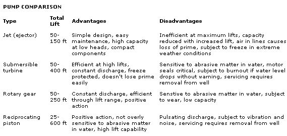

From Mother No. 89
A customer's primer.
Having a ready supply of fresh water might seem certain as death and taxes, but any landowner who thinks that aqua pura automatically comes with the territory may be in for a major letdown. The truth is that most surface water is contaminated-at least to some degree-with chemicals, sewage, or surface runoff:
This leaves most rural dwellers little choice but to drill a well . . . and even for the great majority of traditionally independent country folk, that option probably will involve calling in a professional driller.
I know, because I've been in the welldrilling business for years . . . so if you're in the market for a hole in the ground, you might listen up. I'll let you in on a few facts that'll give you some understanding of what's going down when the boring rig sets up in your front yard, and that'll put you in a better position to bargain-or at least get the most out of your money-when it comes time to shell out the cash.
The drilling of a well can be done in several different ways, although two methods-cable and rotary-probably account for nearly all the deep wells sunk today. To keep things in perspective, let me say that nondrilled wells (which include dug, bored, jetted, and driven water holes) are generally limited to 100 feet or so in depth, while true drilled shafts can easily penetrate several hundred feet or more. In many areas, there are three good reasons to go the extra expense of the deeper, drilled well: First, the water is less likely to be polluted; second, such a well will probably provide a greater volume of water because of its sheer storage capacity; and finally, due to the considerable investment involved, the drillers are almost never fly-by-night contractors.
In the cable-drilling method, a one-ton tool bit, appropriately called a pounder, is suspended from a steel cable and dropped in two-foot strokes to shatter and crush the material beneath it. (Sometimes down-the-hole air hammers are used instead.) The well casing may be installed as the pounding progresses, and water is added to the hole and bailed out periodically to remove the pulverized matter that slows the bit's headway.
Rotary drilling operates on a different prin ciple. As the name implies, a revolving drill bit-which is fastened to a series of 20- or 25foot sections of heavy-wall pipe-actually cuts through the overburden. Water and compressed air are blown through the hollow drill rod as it spins, flushing a slurry of tailings out the top of the hole. In addition to turning the bit, the hydraulically powered rotary rig provides a downward force . . . and is also capable of hammering a casing into the newly bored hole.
Speaking of casing, that part of the drilling operation is handled somewhat differently with the rotary method, too. Instead of combining the drilling and sleeving procedures as the cable driller does, a rotary rig bores a slightly oversize shaft into which the casing is later installed. Since the walls of the hole can start to collapse before the casing can be set, the operator often must pump driller's mud (bentonite clay or a synthetic equivalent) down the shaft with the flush water to firm up the sides. Once that's completed, the tapered-tip casing can be fed into the hole and either locked into bedrock with the help of an air hammer or packed with gravel. The well is then sealed with concrete to prevent surface water from leaking past the casing and contaminating the groundwater supply that feeds the well.
Which drilling method is better? Well, there's no single answer to that question, but here are some facts to mull over: A rotary rig can usually punch a hole about five times faster than its cable-driven cousin. It can also go deeper with less effort and can even cut through the hardest rock with the help of carbide-tipped bits.
The cable rig, on the other hand, makes slower progress, owing to its design . . . and can have some real difficulty going beyond the 150-foot range. Too, the tool point isn't as effective on rock, so dynamite may be needed to fracture the harder material. Finally, because it's under such stress, the casing material used with a cable drill is generally heavier, stronger, and more expensive-by up to a dollar a foot-than that used in a rotary-drilled well.
In light of these facts, why would anyone want to use the cable method to drill a well? Simply because the shock of the heavy tool bit can open fissures in the rock, freeing up any water-bearing veins . . . which effectively means that a cable-drilled well may not need to be quite as deep as a rotary-bored one to yield a satisfactory water flow.
Actually, your choice of a drilling method is dictated by which local contractor you hire . . . and if they all use similar equipment, your options are limited. Far more important in your quest to get the most for your buck are the price per foot, the cost and size of the casing, and, ultimately, the yield of the well in gallons per minute (GPM).
Unfortunately, I can't give you pricing information . . . simply because the composition of the overburden varies so much from region to region. What I can tell you with some certainty is that there'll be a minimum depth fee, usually set at 100 feet. Much of the expense of drilling is in the moving and setting of the rig, so even if the operator hits good water at 60 feet, you'll probably still be charged for a 100-foot well.
As far as the casing goes, 5" and 6" internal diameter (I.D.) are both common sizes for a professionally drilled well, though 4" pipe isn't unheard of. Aside from cost (which might vary by a dollar a foot between sizes), the diameter of the casing is important because it's directly related to the well's storage capacity. If you think of your well as a long, thin reservoir of water, it's easy to fathom how a broader casing can store a greater volume than a narrow one. Just for reference, a 4" casing can hold about 2/3 gallon per foot; a 5-incher, just over a gallon; and a 6" one, nearly 1-1/2 gallons.
How much capacity is enough? That's tied in with the well's yield, its recovery rate, and, of course, how much water your household uses. It would take me some time to explain the intricacies of each of these factors, so I'll take a shortcut by just giving you some commonsense parameters. First of all, you'll need to establish your household's minimum daily needs, which should include not only water used in bathing and drinking, but that consumed by flushing toilets, washing dishes and clothes, and watering gardens, lawns, livestock, or anything else outdoors . . . including buildings, should a fire ever occur.
Measuring all this would take some effort, so I've provided a general water requirement chart for your reference. But another fac tor, peak demand, also comes into play. It's a direct result of our tendency to use the majority of our water during specific times of the day, thus putting a huge demand on the well over a relatively short period. Rather than actually calculating this, you can simply halve what you figured your household's daily needs are and consider that estimate as your maximum hourly water requirement.
If you're not too much for arithmetic, the rule of thumb in supplying a modern household is to shoot for a flow of 8 to 10 gallons per minute at the standard pressure of between 30 and 40 pounds per square inch (psi). Don't, however, let that figure intimidate you; for some families, 2 or 3 GPM is a perfectly reasonable quantity of water.
By the way, you-or more specifically, your drill-rig operator-should be prepared to assure the well's yield by making drawdown and recovery tests. This procedure of bailing or pumping the hole will tell you not only what kind of a flow you can expect from your investment, but also if the delivery will be consistent.
Maybe I've thoroughly confused you by now. If that's the case, there's still hope: Talk to some neighbors who've had wells drilled on their property. Find out how deep their wells are, how much casing was used, what the cost per foot was, and what kind of yield they've experienced. It would also be to your advantage to ascertain whether or not they've had any dry-spell difficulties . . . which would indicate that you might want to go the extra mile (don't take me literally!) when you drill your well.
Remember, too, that professional well contractors are often licensed by-and must answer to-the state or county government. They're bona fide business people and as such should be able to provide you with a contract that covers at least the following areas: health and environmental code compliance, liability insurance for the customer and the driller, casing specifications (including size and diameter, penetration, sandscreen protection, and annular seal information), a completion date, a test-pumping report, a copy of the drilling log, itemized costs (per foot for drilling, as well as for the casing, plus any additional materials or labor charges), and a guarantee of materials and workmanship.
Unless you're one of the rare few who've been blessed with an artesian well that provides its own pressure, you're going to have to spring for a pump and pressure system to maintain a consistent delivery of water through your household plumbing network. I'm not going to go into the delivery pipe or electrical cable, because those components are standardized . . . and all I'm going to say about the pressure tank and its switch control-even though there are several different types in use-is that they're there to keep the pump from kicking on every time you open even the smallest faucet.
The pump, however, might merit a bit of explanation, because the cost of operating it will be apparent long after the price of the well is forgotten. Again, in the interest of brevity, I've worked up a table to highlight the. characteristics of the pump types you'll probably be encountering, though this listing is by no means complete.
I hope I've at least given you some idea of what to expect when you begin your search for water. I'd love to stick around and answer some more questions, but guess what . . . I've got a well to drill!
|
 |
 |
|